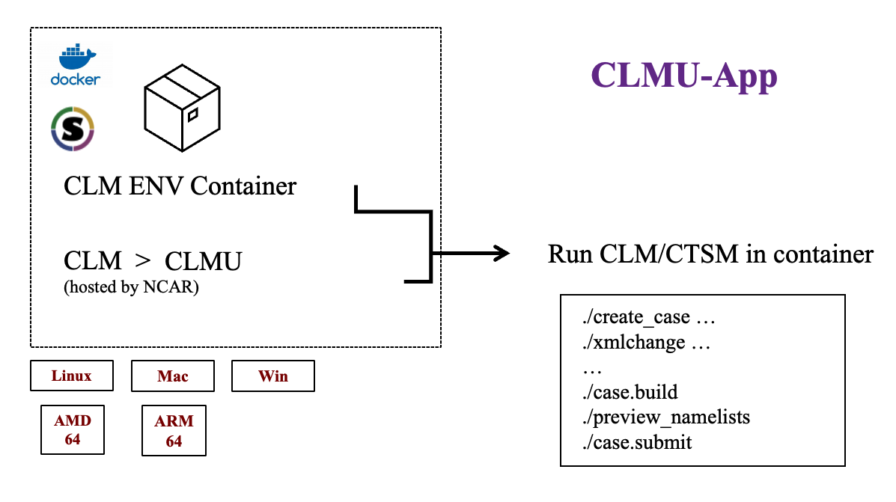

CLM ENV Container detail
Base:
OS=
Fedora 31
Major apps:
Compiler=
GCC 9.3.1Cmake=
3.18netcdf-c=
4.7.0-2netcdf-fortran=
4.5.2-3python=
3.7.9svn=
1.12

.. warning:: The clmu-app currently does not provide ESMF as we want a compact container. The ESMF is important for making your own data of other mode of single points. We recommend to prepare the date out of the clmu-app, and then bind/import them to clmu-app to run the special single point case. If ESMF is still need, user can install it as follow:
How to install ESMF? ``` # Required envs for building libraries export ESMF_DIR=/tmp/download/esmf-ESMF_8_0_1 export ESMF_INSTALL_PREFIX=/usr/local export ESMF_INSTALL_MODDIR=include export ESMF_INSTALL_LIBDIR=lib export ESMF_INSTALL_BINDIR=bin export PATH=”/usr/lib64/openmpi/bin:${PATH}”
# Build and install ESMF libraries
mkdir -vp /tmp/download
cd /tmp/download
wget -c https://github.com/esmf-org/esmf/archive/ESMF_8_0_1.tar.gz
tar zxf ESMF_8_0_1.tar.gz
cd esmf-ESMF_8_0_1
make -j
make install
rm -rf /tmp
```